About us
Über uns
Wastidere ist ein kleines Unternehmen, das sich zur Aufgabe gemacht hat, Videoschnitt für mehr Menschen zugänglich zu machen. Video ist ein starkes Medium, das alles Mögliche vermitteln kann, doch nicht jeder möchte sich damit auseinandersetzen. Videoschnitt-Software wird immer komplizierter, und schon für die einfachsten Dinge braucht man immer mehr Know-how. Deshalb haben wir das Wastidere Cutkit erstellt: Jeder soll einen leichten Einstieg in den Videoschnitt haben und so seine eigenen Geschichten erzählen können.
Martin S. Wastid hat das Unternehmen Ende 2025 in Wien gegründet. Mit einem kleinen Team von vier Mitarbeitern arbeiten wir weiter an Verbesserungen.
Der Name Wastidere stammt vom Namen des Gründers, Wastid. Daraus entstand ein Kunstwort, angelehnt an das lateinische Wort vidēre, das "sehen" bedeutet. Wir möchten unsere Visionen mit anderen teilen und einen neuen Blickwinkel auf den Videoschnitt ermöglichen.
Unsere Marken
Unser Logo bildet sich aus dem Buchstaben W, der eine starke Verbindung zu Wastidere herstellt. Zusätzlich hat es einen Schnitt in der Mitte, der den Bezug zum "Cutten" im Videoschnitt gibt. Neben dem W befindet sich ein halbes Auge, das die Form eines D hat und so die Initialen von Wastidere ergänzt. Das Auge bekräftigt auch das lateinische Wort vidēre (sehen). Zusammen sind sie ein unverwechselbares Merkmal der Marke Wastidere.

Eine Animation unseres Logos darf nicht fehlen. Sie zeigt, wie der Cut entsteht und sich das Auge öffnet.
Marken und Nizza-Klassen
Wir haben unsere Marken für Klasse 9 der Nizza-Klassifikation angemeldet (fiktive Anmeldung). Klasse 9 umfasst unter anderem herunterladbare Software und digitale Dateien, dazu zählen unsere Vorlagen für Videoschnitt-Software.
- Wortmarke: Wastidere – Klasse 9 (herunterladbare Vorlagen und Software für Videoschnitt)
- Bildmarke: das Wastidere-Logo – Klasse 9 (herunterladbare Vorlagen und Software für Videoschnitt)
- Bewegungsmarke: das animierte Wastidere-Logo – Klasse 9 (herunterladbare Vorlagen und Software für Videoschnitt)